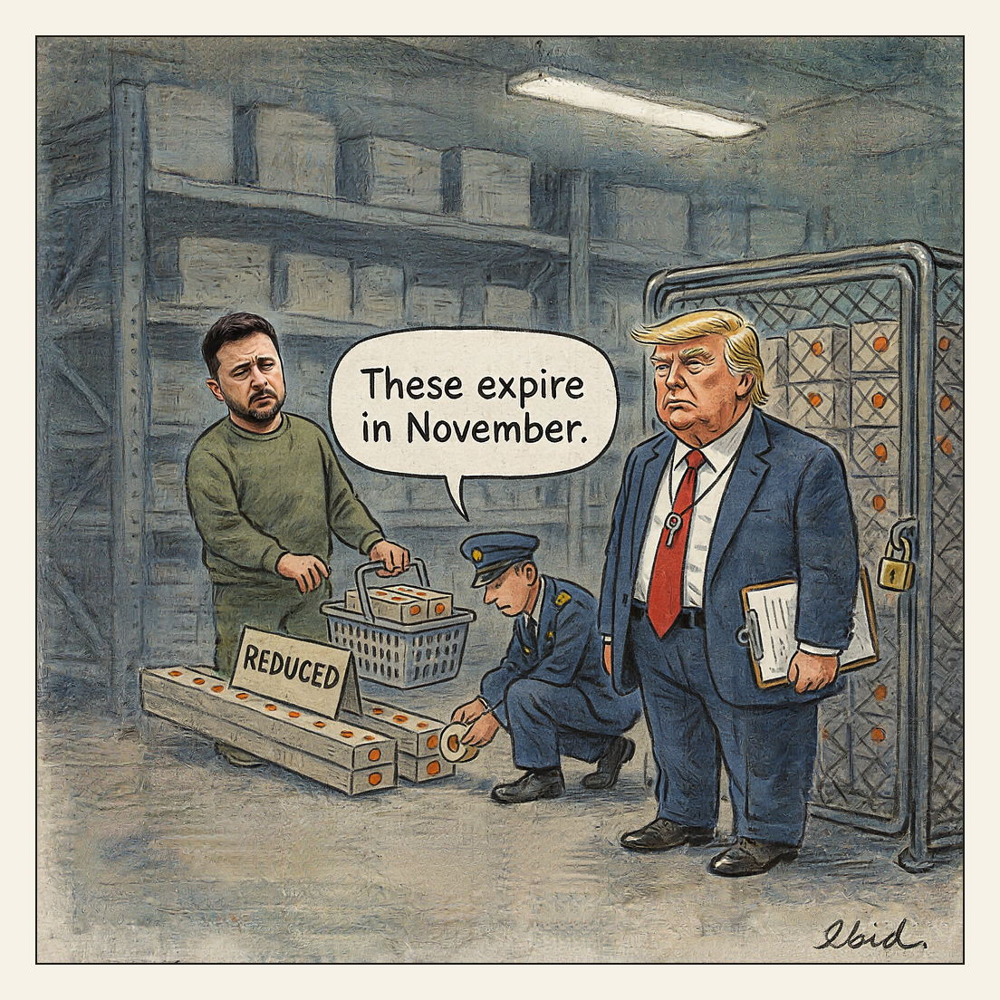

Anything in date is spoken for.
Short-Dated

July 2026 was the deadliest month of Russia's war on Ukraine since May 2022, with 376 missiles, nearly 5,000 drones and hundreds of glide bombs launched. On July 24, three missiles reached Kyiv; air defence downed one and two struck a sports centre, killing 12. Kyiv holds roughly a tenth of the Patriot interceptors it needs after President Trump redirected PAC-2 and PAC-3 supplies to Middle East allies and the US strategic stockpile, and is soliciting interceptors from about 40 countries, some close to their expiry dates.